📱 ③ 앱 화면별 기능
아래 5개 탭이 앱의 전부입니다. 사진의 빨간 번호와 설명의 번호가 같습니다.
🏠 내 근무
앱을 열면 가장 먼저 보이는 화면입니다. 오늘 내 근무를 한눈에 봅니다.
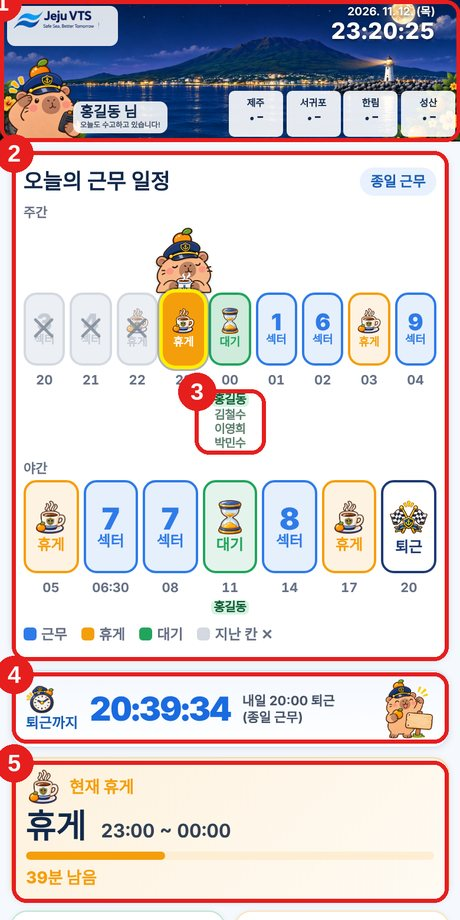
(예시 · 가짜 이름)
- 맨 위 — 내 이름, 현재 시각(서버 시간이라 정확), 제주·서귀포·한림·성산의 지금 날씨·온도.
- 오늘의 근무 일정 — 주간·야간 칸. 파랑=근무, 주황=휴게, 초록=대기, 회색 ×=지난 칸. 지금 칸에 캐릭터가 서 있습니다.
- 칸 밑의 이름 — 그 시간에 대기하는 사람들. 내 이름은 진하게 보입니다.
- 퇴근까지 — 퇴근 시각과 남은 시간이 흐릅니다.
- 현재 근무 / 휴게 / 대기 — 지금 상태와 남은 시간, 바로 다음 일정.
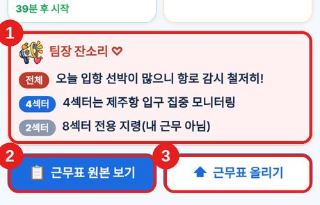
(아래쪽으로 내리면)
- 팀장 잔소리(지령) — 팀장이 올린 지령. 전체 → 내 섹터 → 다른 섹터(회색) 순으로 보입니다.
- 근무표 원본 보기 — 지금 근무 중인 근무표의 원본 사진을 봅니다. 사진을 탭하거나 ＋ 확대 / － 축소 버튼, 손가락 벌리기로 크게 볼 수 있습니다. 근무가 끝나면 사진은 지워집니다.
- 근무표 올리기 — 사진으로 근무표를 올립니다 (① 설명서 참고).
👥 실시간 근무현황
지금 각 섹터에 누가 앉아 있는지 보는 화면입니다.
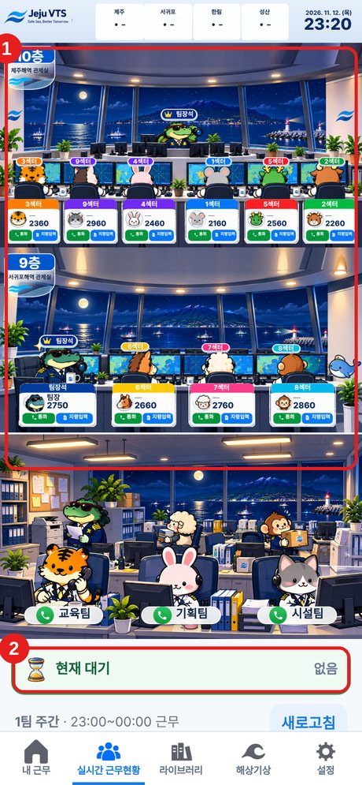
(예시 · 가짜 이름)
- 층별 관제실 — 섹터마다 근무자 캐릭터와 이름이 나옵니다. 섹터 아래 통화 버튼은 그 섹터의 유선(내선) 전화로 거는 것이고, 지령입력은 그 섹터에 지령을 올리고 지울 때 씁니다.
- 현재 대기 — 지금 대기 중인 사람이 나옵니다. 아래로 내리면 이 시간의 근무표와 새로고침이 있습니다.
팀장 지령 (전체)
9층 팀장석(악어)을 누르면 열리는 창에서 지령 입력을 누르면 모든 섹터 근무자의 알림에 붙는 전체 지령을 올릴 수 있습니다. 이미 나간 알림에는 붙지 않고, 근무가 끝나면 지워집니다. 지령은 최대 10개입니다.
팀장 지령은 전담팀장제 실시를 염두에 두고 만든 기능으로, 지금은 크게 활용되지 않습니다.
예) 3섹터 풍랑주의보 — 항해안전방송 2시간 간격 실시
이렇게 쓰면 편해요
- 비번인 날, 근무 중인 사람에게 내부망으로 부탁할 일이 있어 안 바쁜 사람을 고를 때
- 팀장이 9층·10층 근무자 현황을 파악할 때
- 일찍 출근해 방에 들어가고 싶은데, 룸메이트가 근무 중인지 방에 있는지 짐작할 때
📚 라이브러리
같이 쓰는 서재입니다. 자료는 같이 올리고, 자주 가는 곳은 바로 열 수 있습니다.
자료모음 — 폴더별로 자료를 모아 둡니다. 폴더 추가, 이름 수정(✎), 삭제를 할 수 있습니다.
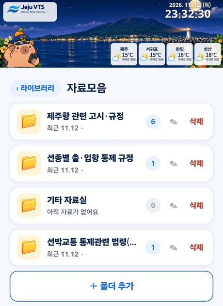
(자료모음)
바로가기 — 해양기상정보포털, 기상청, 해양수산부 같은 자주 가는 사이트를 한 번에 엽니다. 링크 추가, 수정(✎), 삭제를 할 수 있습니다.
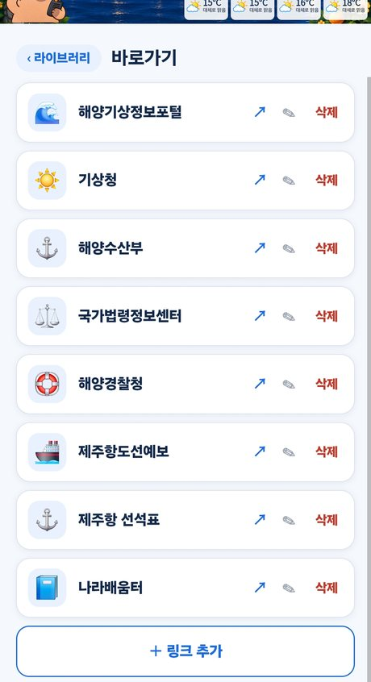
(바로가기)
🌊 해상기상
관제구역의 바람·파도와 물때를 봅니다.
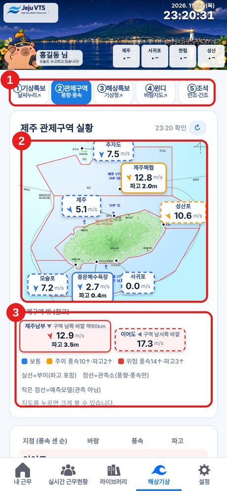
(예시)
- 위쪽 5개 버튼 — ①기상특보 ②관제구역(풍향·풍속) ③해상특보 ④윈디(바람지도) ⑤조석(간조·만조). ①③④는 해당 사이트가 열립니다.
- 관제구역 실황 지도 — 부이(실선, 파고 포함)와 관측소(점선, 풍향·풍속만)의 지금 값. 지도를 누르면 크게 봅니다. 색은 보통 / 주의(풍속 10↑·파고 2↑) / 위험(풍속 14↑·파고 3↑).
- 지점별 표 — 지점마다 바람·풍속·파고.
③ 해상특보 처음 설정
③해상특보는 기상청 해양기상기후정보포털이 열립니다. 처음 한 번만 아래처럼 설정해 두면, 다음부터는 바로 지도 화면으로 열립니다.
1) 포털 화면 왼쪽 위 삼선(☰) 메뉴를 누릅니다.
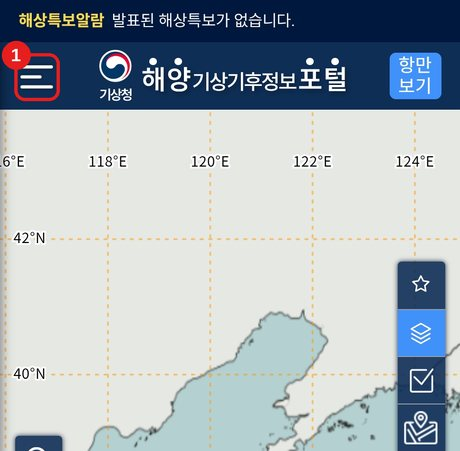
(포털 지도 화면)
2) 메뉴 맨 아래의 "접속 시 지도 화면으로 시작"을 켭니다(주황색).
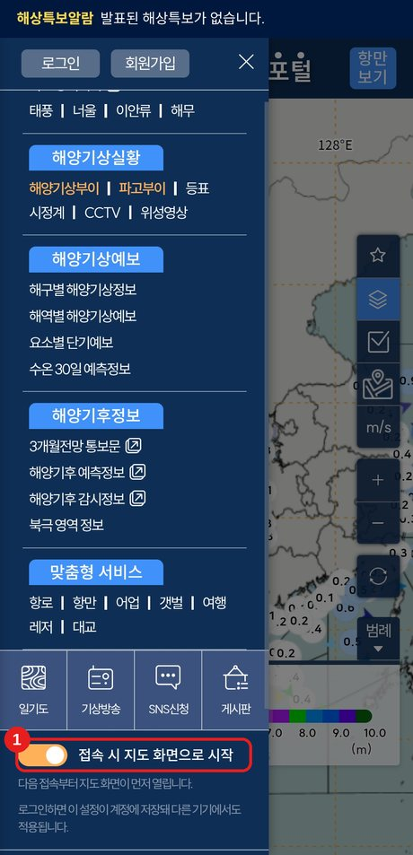
(삼선 메뉴)
⑤ 조석(만조·간조)
제주 주변 항·포구의 물때를 봅니다.
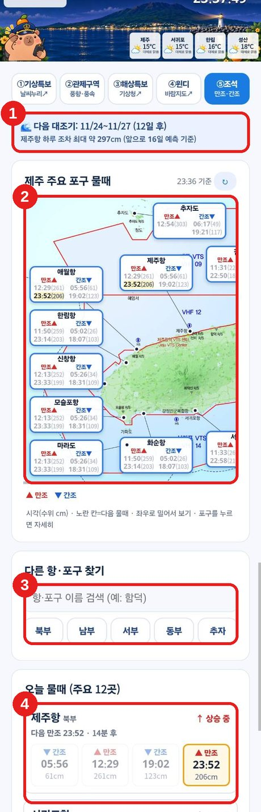
(조석 화면)
- 대조기 안내 — 다음 대조기(조수 차이가 가장 큰 시기) 기간과 제주항 하루 조차 최대치.
- 제주 주요 포구 물때 — 지도 위에 포구별 만조(▲)·간조(▼) 시각과 수위(cm). 노란 칸은 다음 물때입니다. 좌우로 밀어 보고, 포구를 누르면 자세히 나옵니다.
- 항·포구 찾기 — 이름으로 검색(예: 함덕)하거나 북부·남부·서부·동부·추자 지역 버튼으로 항·포구를 고릅니다.
- 오늘 물때(주요 12곳) — 포구마다 간조·만조 4개 시각, 수위, 다음 물때까지 남은 시간, 상승 중/하강 중.
조석은 예측값입니다. 기상·기압·바람에 따라 실제와 다를 수 있으니 참고용으로 보세요.
⚙ 설정
내 정보와 알림을 관리합니다.
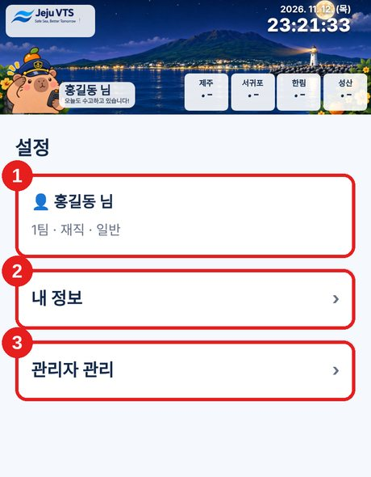
(예시 · 가짜 이름)
- 내 이름 — 팀·상태가 보입니다.
- 내 정보 — 팀, 전화번호, 재직/휴직, 알림 설정을 바꿉니다.
- 관리자 관리 — 직원 명단 관리 (아래).
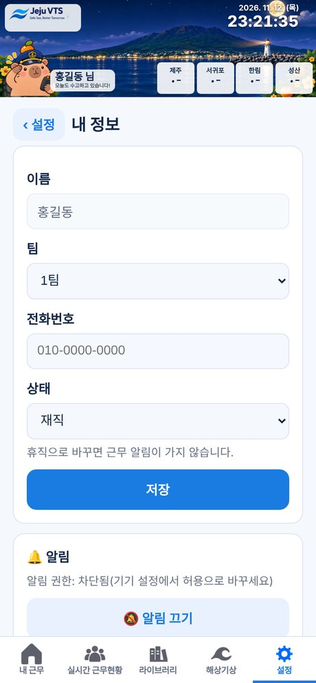
(내 정보)
휴직으로 바꾸거나 알림 끄기를 하면 근무 알림이 가지 않습니다. 알림이 안 올 때는 시험 알림 보내기와 이 기기 알림 다시 등록을 눌러 보세요.
👤 관리자 관리
직원 명단을 보고 관리합니다. 고칠 수 있는 범위는 내 권한(총괄관리자·팀관리자)에 따라 다릅니다.
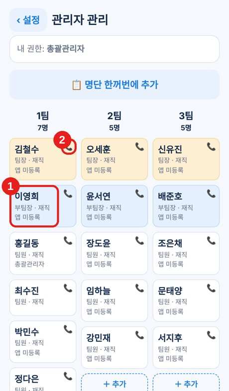
(예시 · 가짜 이름)
- 직원 카드 본문(이름 부분)을 누르면 편집 창이 열립니다.
- 📞를 누르면 그 직원에게 바로 전화가 걸립니다 (번호가 등록된 직원만 보입니다).
팀을 옮겼을 때
편집 창의 팀 칸에서 새 팀을 고른 뒤 저장을 누릅니다.
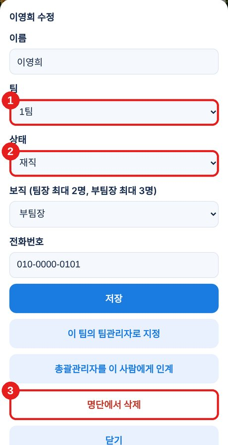
(편집 창)
- 팀 — 다른 팀을 고르면 팀 이동.
- 상태 — 잠시 쉬는 직원은 휴직 (알림이 가지 않고 명단에는 남음).
- 명단에서 삭제 — 발령 등으로 떠난 직원.
발령 난 직원은
카드를 눌러 편집 창을 연 뒤 맨 아래 명단에서 삭제를 누릅니다. 삭제된 직원은 앱을 쓸 수 없고 알림도 오지 않습니다. 다시 쓰려면 명단에 다시 추가하고 앱 등록을 새로 해야 합니다. (총괄관리자는 삭제할 수 없습니다.)
알아두면 편한 점
• 아래 탭을 한 번 더 누르면 그 탭의 첫 화면으로 돌아갑니다.
• 앱은 항상 홈 화면 아이콘으로 여세요.